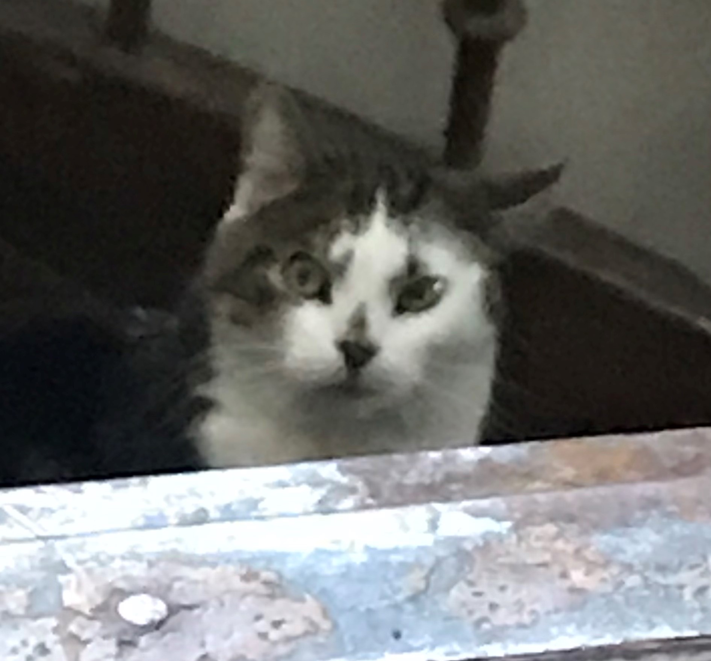
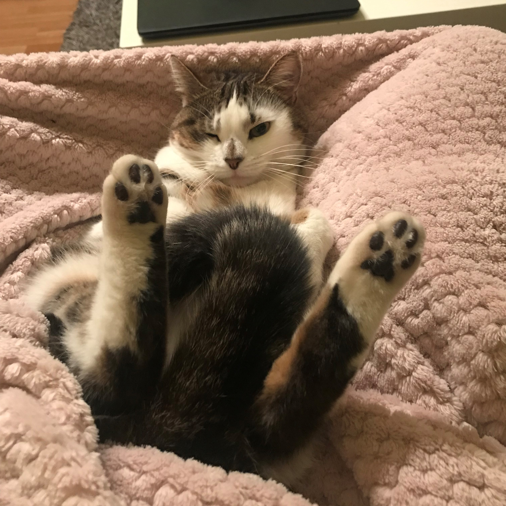

"I have studied many philosophers and many cats. The wisdom of cats is infinitely superior." −Hippolyte Taine
NÖÖP

Nööp on varjupaigast adopteeritud 2017. aasta aprillis. Nööp on suur, koheva karvaga ja üsna aeglane. Nööp on ka väga suure isuga ning sellest tulenevalt on ta päris pontsakas.. Talle ei meeldi väga teised kassid, kuid Sherlocki ja Chuckiga saab ta hästi läbi!
